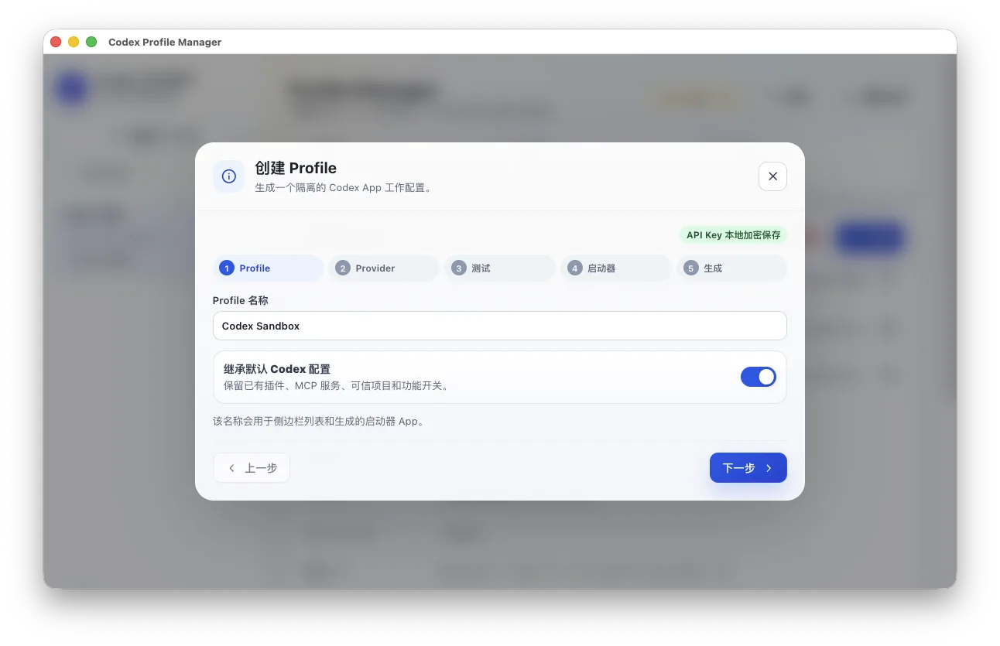
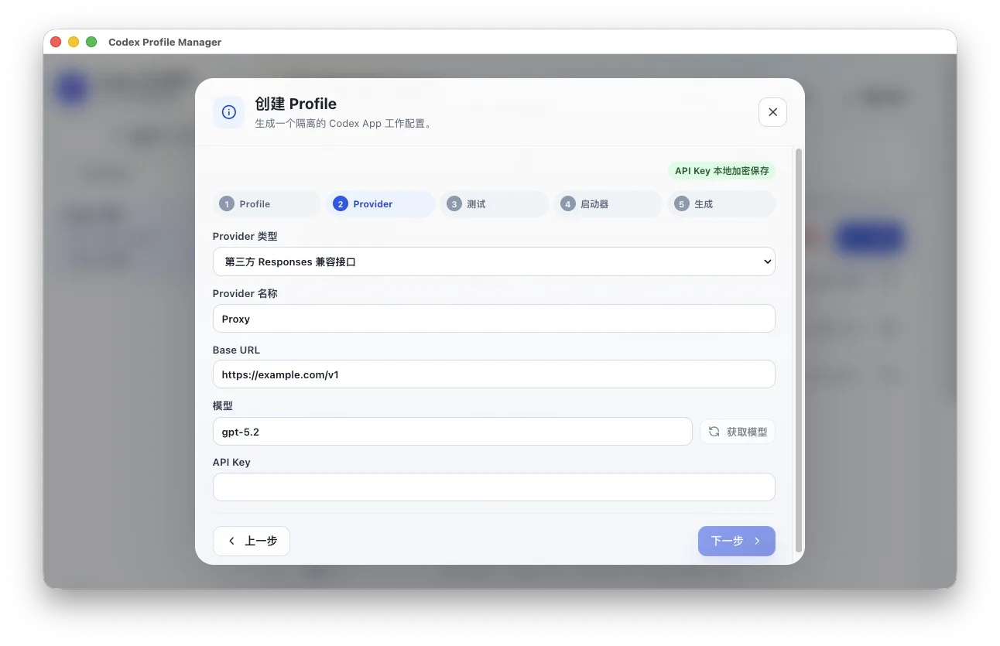
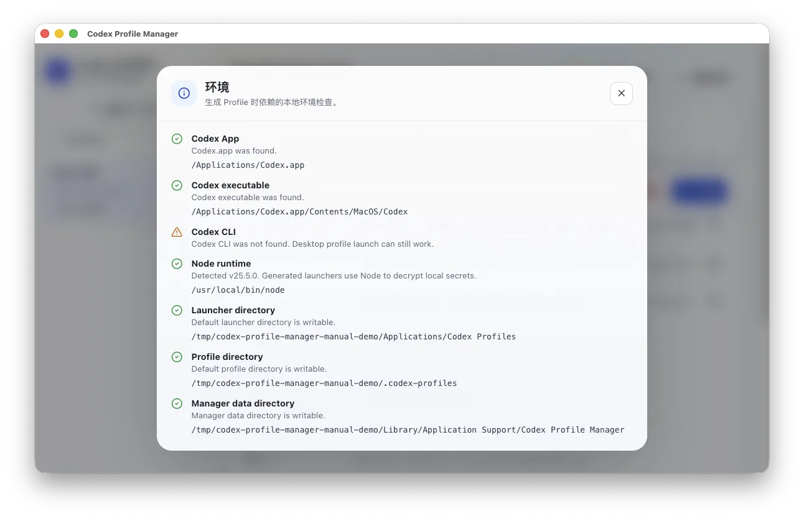

图文用户手册
从安装到创建第一个 Codex 多开窗口。
Codex Multi Launcher（Codex 多开助手）用于创建多个相互隔离的 Codex / ChatGPT 桌面窗口。每个窗口都可以拥有独立账号、工作区、应用数据、API 配置和指定历史对话。
- 一个 Codex 窗口不够用，需要同时开启多个窗口处理不同项目。
- 希望不同窗口登录不同 ChatGPT 账号，或者分别使用账号登录与 API Key。
- 希望一个窗口使用官方 OpenAI API Key，另一个窗口使用第三方 Responses 兼容接口。
- 创建新配置时，希望继续使用已有项目和历史对话。
- 不想手动修改 `config.toml`、启动脚本或命令行参数。
1. 安装与打开
- 从 Latest Release 下载：M 系列 Mac 选择 arm64 或 universal，Intel Mac 选择 x64 或 universal，Windows x64 选择安装版或便携版。
- macOS 解压 zip 后，将 App 拖到“应用程序”，再正常双击打开。
- Windows 安装版运行 Setup，便携版下载后可直接运行。
- 先安装并至少打开一次官方 Codex / ChatGPT 桌面 App。
macOS 正式包已使用 Developer ID 签名并完成 Apple 公证。Windows x64 包当前暂未签名，可能显示 SmartScreen 提示，请只从项目 GitHub Releases 下载。
2. 主界面说明

一个 Profile 就是一套独立 Codex 工作区配置。主界面会显示：
- `CODEX_HOME`：该 Codex 窗口使用的配置目录。
- `user-data-dir`：该 Codex 桌面窗口自己的应用数据目录。
- `Launcher`：生成的双击启动器 App。
- `Provider`：当前使用的 API 服务商。
- `Base URL`：第三方接口地址。
- `Env key`：启动器内部使用的环境变量名。
3. 创建新的 Codex 多开窗口
点击左侧 `创建 Profile` 后，会打开创建向导。

- `Profile 名称`：建议使用容易识别的名字，例如 `Su8 工作区`、`官方账号`、`项目 A`。
- `沿用当前 Codex 设置`：按需保留源 App 的插件、MCP、可信项目与功能开关。
4. 选择登录方式
每个 Profile 可以选择一种登录方式：
- ChatGPT 账号登录：生成后在独立 Codex / ChatGPT 窗口内完成登录，不需要填写 API Key 和接口地址。
- API Key：使用官方 OpenAI API 或真正兼容 Responses API 的第三方服务商。
账号登录模式不会保存 API Key，也不会写入 `OPENAI_API_KEY`。需要切换账号时，在对应独立窗口中退出并重新登录。
5. 同步已有历史对话
开启“同步已有对话记录”后，可以从源 App 或已有多开配置中选择一个或多个来源。
- 仅项目：同步与项目目录关联的对话。
- 仅临时任务：只同步临时任务，不创建没有对话的空项目目录。
- 全部：同步项目和临时任务中的支持内容。
同步会为新 Profile 创建独立副本，后续新增对话不会反向写回来源配置。
6. 配置 API Provider

如果使用第三方中转站，按下面填写：
- `Provider 类型`：选择 `第三方 Responses 兼容接口`。
- `Provider 名称`：填写便于识别的名称，例如 `Su8`、`公司代理`。
- `Base URL`：填写第三方提供的 OpenAI 兼容地址，通常以 `/v1` 结尾。
- `模型`：填写模型 ID，例如 `gpt-5.2`。如果服务商支持 `/models`，可以点击 `获取模型` 后从列表中选择。
- `API Key`：填写第三方服务商提供的 API Key。
如果使用官方 OpenAI API Key，`Provider 类型` 选择 `官方 OpenAI API Key`，填写模型和 API Key 即可。
7. 测试并生成
进入 `测试` 步骤后，点击 `测试 Provider`。测试会检查 Base URL 是否可访问、API Key 是否能通过认证、Provider 是否支持 Responses API。
账号登录模式无需测试 Provider。API Key 模式可先测试网络、鉴权与 Responses API 兼容情况。
最后确认信息后点击“生成”。生成完成后，在主界面选择 Profile 并点击“打开”。
8. 修改已有 Provider 和恢复备份
在主界面下方可以编辑当前 Profile 的 Provider：
- 修改 `Provider 名称`、`Base URL` 或 `模型`。
- 如果不想更换 API Key，`新的 API Key` 保持空白。
- 点击 `测试` 可以复用已保存的 API Key 进行测试。
- 点击 `保存 Provider` 会同步更新 Profile 的 `config.toml` 和启动器。
每次保存前，App 会自动创建配置备份。你可以在 `最近配置备份` 中恢复旧配置。
9. 查看环境检查
点击顶部环境状态按钮，例如 `1 warning`，可以查看本机环境。

10. 移除、恢复和彻底删除
`移除` 只是把 Profile 从常用列表里隐藏，配置文件和启动器仍保留。
如需查看已移除的 Profile，勾选左侧 `显示已移除`。选择已移除 Profile 后，可以点击 `恢复` 重新启用。
`彻底删除` 会删除该 Profile 的 `CODEX_HOME`、`user-data-dir`、生成的启动器 App 和本地加密保存的 API Key。彻底删除无法恢复，请谨慎操作。
11. 常见问题
打开生成的 Codex 后还是进入登录页
通常说明 Profile 配置或 `auth.json` 没有正确生成。请回到 Codex 多开助手，选择该 Profile，点击 `保存 Provider` 后再点击 `打开`。
对话请求走了官方 Base URL
请检查当前 Profile 的 `Provider` 和 `Base URL` 是否正确。修改后点击 `保存 Provider`，再重新打开该 Profile。
获取模型失败
部分第三方服务商不提供 `/models`，或者返回格式不兼容。此时可以继续手动填写模型 ID。
测试 Provider 报 401 或 403
通常是 API Key 不正确、额度不足，或服务商要求使用不同的 Key 格式。请在服务商后台确认 Key 可用。
12. 安全说明
- API Key 只保存在本机。
- API Key 使用本地加密文件保存。
- 诊断报告不会包含 API Key。
- `config.toml` 和启动器脚本不会写入明文 API Key。
- 反馈问题时优先使用 `复制诊断`，不要直接发送自己的 API Key。